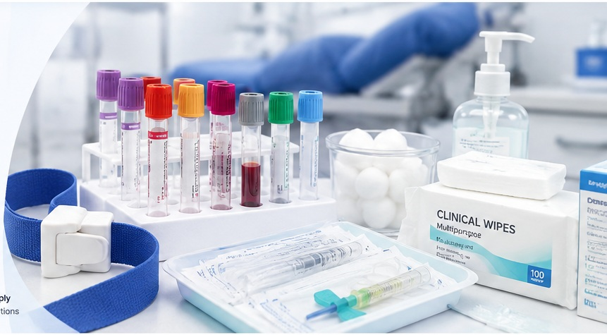

Everything your clinical station needs.
DICUMED supplies high-quality consumables for phlebotomy, blood collection, IV access and laboratory use. One trusted UK source for clinics, laboratories and diagnostic services.

Phlebotomy
Station
Everything you need for safe, efficient blood collection.
View products →
IV Access
Station
Consumables for IV administration and patient care.
View products →
Laboratory
Supplies
Essential consumables for laboratory and diagnostic use.
View products →
Business
Supply
Supporting clinics, laboratories and multi-site operations.
View solutions →UK clinics & labs
Products
UK & EU compliant
Reliable & tracked
Support
Partnerships
Multi-site solutions
Shop by clinical workflow.

Blood Collection
Tubes, venepuncture accessories and collection essentials.
Explore category →IV Access & Infusion
Cannulas, extension sets, syringes and securement.
Explore category →PPE & Hygiene
Protective and routine hygiene consumables.
Explore category →
Other Essentials
Supporting supplies for complete clinical stations.
Explore catalogue →Homepage/category photography is illustrative. Exact manufacturer product photography will be used on individual stocked items when supplied and approved.
One clinic or a multi-site network.
Tell us your locations, recurring usage and preferred ordering pattern. DICUMED can build a supply proposal around your operational requirements.
A practical supply partner for routine clinical consumables.
Clear product organisation, business-account support and a growing range built around complete phlebotomy and IV stations.
How can we help?
For product availability, business accounts and documentation enquiries, contact us directly.